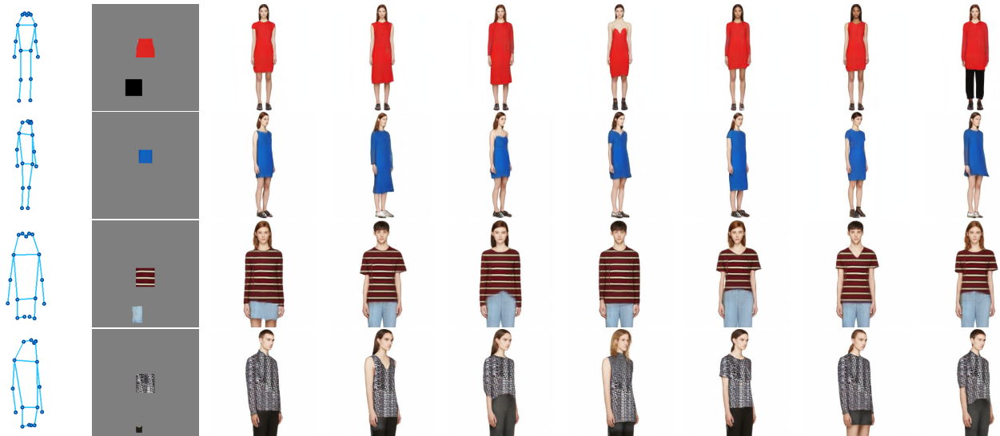

PLAN Is All You Need to Make You a Fashion Designer
In this paper, we investigate a new problem of generating a series of
fashion design images conditioned on a guided human pose along
with texture examples of arbitrary sizes for helping fashion designers rapidly visualize an original garment. Instead of learning a direct
mapping, we propose a novel Photo-reaListic fAshion syNthesis
(PLAN) framework, which decomposes the direct mapping into
two manageable stages. In the first stage, we employ a semantic
layout generative network to transform an input human pose into a
series of person semantic layouts. In the second stage, we propose a
texture synthesis network to synthesize textures on all transformed
semantic layouts. Specifically, we design a novel attentive texture
transfer mechanism for precisely expanding texture patches to the
irregular clothing regions of the target fashion designs.
Data

|
We evaluate our proposed PLAN on the Fashion-Gen
dataset since it contains a variety of complex clothing textures.
Fashion-Gen contains 293,008 images of resolution 256 * 256, in
which each fashion item is photographed from a variety of angles.
We select four dominant clothing categories (e.g., dresses, shirts,
sweaters and tops) from 48 main fashion categories of the FashionGen dataset for evaluation. In total, we obtain 12,415 fashion item
images. We randomly select 10,416 images as our training set and
select 1,999 images for test.
Results
The generated diverse fashion design images conditioned on the same input, where the first column is the input pose
image, the second column is the input texture patches and the others columns are the synthesized fashion images.


|

{kind=link}
{kind=link}